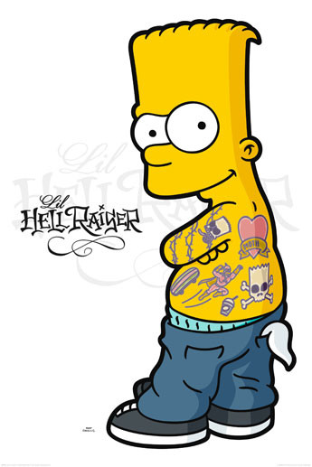
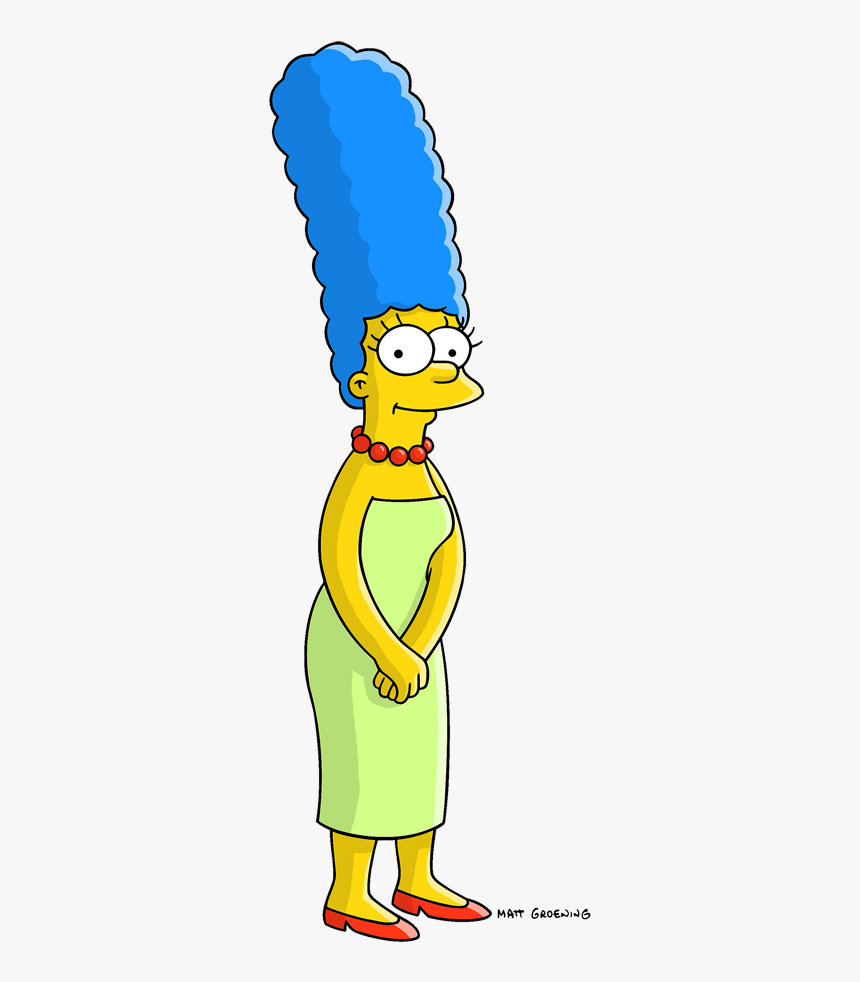

Сімпсони — американський анімаційний сатиричний серіал, створений Меттом Ґрейнінґом для компанії «Fox». Мультсеріал — сатирична пародія на стиль життя середнього класу США, втілена в сім'ї Сімпсонів, яка складається з Гомера, Мардж, Барта, Ліси та Меґґі. Більшість подій відбуваються у вигаданому містечку Спрінґфілді. Шоу висміює численні аспекти життя людей, американську культуру, суспільство, навіть американське телебачення.
Гомер Джей Сімпсон — батько родини, гладкий, лисий, ледачий і не дуже розумний. Він часто поводиться абсурдно, егоїстично і нетактовно, втім, залишається симпатичним.
Бартоломео «Барт» Сімпсон — 10-літній син Гомера і Мардж Сімпсон, найстарша дитина в сім'ї, втіллення образу непослуха, бешкетника і посереднього учня в школі.

Марджері «Мардж» Сімпсон — дружина Гомера, дівоче ім'я — Був'є. Домогосподарка, майже весь час проводить вдома, доглядаючи за наймолодшою дитиною Меґґі, а також за Бартом і Лісою, і навіть за чоловіком. Її найвідоміша особливість — блакитне волосся, зібране у високу зачіску.
